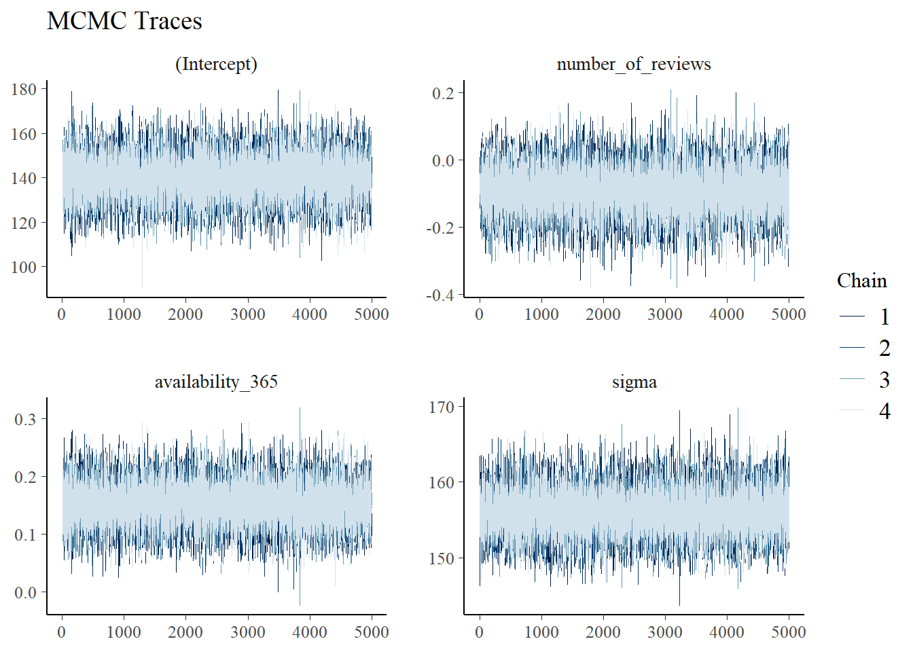

library("bayesplot")
library("bayesrules")
library("ggtext")
library("janitor")
library("patchwork")
library("rstan")
library("rstanarm")
library("tidyverse")
knitr::opts_chunk$set(echo = TRUE)
airbnb_raw <- readr::read_csv("listings.csv")
# brand colors
# https://pickcoloronline.com/brands/airbnb/
airbnb_red <- "#FF5A5F"
airbnb_green <- "#00A699"
airbnb_orange <- "#FC642D"
airbnb_black <- "#484848"
airbnb_gray <- "#767676"Hierarchical Models
Goal: Apply group classifications to models

Data
- source: Airbnb listings
- 22 December, 2023
- “Summary information and metrics for listings in Jersey City (good for visualisations).”
Before data wrangling:
- 1549 observations
- 18 variables
Data Wrangling
- extracted
wardclassification - nonzero
availablity_365 - excluded rare “Hotel” or “Shared Room” listing
- removed observations with missing values
After data wrangling:
- 1348 observations
- 7 variables
airbnb_df <- airbnb_raw |>
mutate(ward = stringr::str_sub(neighbourhood,6,6)) |>
select(price, host_id, number_of_reviews, availability_365,
room_type, ward) |>
filter(availability_365 > 0) |>
filter(room_type %in% c("Entire home/apt", "Private room")) |>
na.omit() |>
group_by(host_id) |>
mutate(listings = n()) |>
ungroup()Exploratory Data Analyses
airbnb_df |>
ggplot(aes(x = number_of_reviews, y = price)) +
geom_point(color = "#767676") +
labs(title = "Airbnb Data",
subtitle = "Price versus number of reviews",
caption = "SML 320",
x = "number of reviews",
y = "price") +
theme_minimal()airbnb_df |>
ggplot(aes(x = availability_365)) +
geom_density(color = "#484848", fill = "#FC642D") +
labs(title = "Airbnb Data",
subtitle = "Availability over calendar year",
caption = "SML 320",
x = "availability",
y = "") +
theme_minimal() +
theme(axis.text.y = element_blank(),
axis.ticks.y = element_blank())airbnb_df |>
ggplot(aes(x = room_type, fill = room_type)) +
geom_bar(stat = "count") +
labs(title = "Airbnb Data",
subtitle = "Listing Types",
caption = "SML 320",
x = "",
y = "count") +
scale_fill_manual(values = c("#FF5A5F", "#00A699")) +
theme_minimal() +
theme(legend.position = "none")airbnb_df |>
ggplot(aes(x = ward, fill = ward)) +
geom_bar(stat = "count") +
labs(title = "Airbnb Data",
subtitle = "ward",
caption = "SML 320",
x = "",
y = "count") +
theme_minimal() +
theme(legend.position = "none")Complete Pooling
\[Y_{i} | \beta_{0}, \beta_{1}, \beta_{2}, \sigma \sim \text{N}(\mu_{i}, \sigma^{2}) \text{ with } \mu_{i} = \beta_{0} + \beta_{1}X_{i1} + \beta_{2}X_{i2}\]
- using one pool of information
complete_pooled_model <- rstanarm::stan_glm(
price ~ number_of_reviews + availability_365,
data = airbnb_df,
family = gaussian,
chains = 4, iter = 5000*2, refresh = 0, seed = 320)
Function
model_diagnostics <- function(the_stan_model){
p1 <- bayesplot::mcmc_trace(the_stan_model, size = 0.1) +
labs(title = "MCMC Traces")
print(p1)
p2 <- bayesplot::mcmc_dens_overlay(the_stan_model) +
labs(title = "Density Plots")
print(p2)
p3 <- bayesplot::mcmc_acf(the_stan_model) +
labs(title = "Autocorrelations")
print(p3)
# effective sample size
print("Effective Sample Size:")
print(bayesplot::neff_ratio(the_stan_model))
# split-R metric
print("R-Hat")
print(bayesplot::rhat(the_stan_model))
}model_diagnostics(complete_pooled_model)
[1] "Effective Sample Size:"
(Intercept) number_of_reviews availability_365 sigma
1.24920 1.17580 1.26975 1.20460
[1] "R-Hat"
(Intercept) number_of_reviews availability_365 sigma
0.9999354 0.9999119 1.0000275 1.0000168 broom.mixed::tidy(complete_pooled_model,
conf.int = TRUE, conf.level = 0.90) |>
mutate_if(is.numeric, round, digits = 4)# A tibble: 3 × 5
term estimate std.error conf.low conf.high
<chr> <dbl> <dbl> <dbl> <dbl>
1 (Intercept) 140. 9.96 124. 157.
2 number_of_reviews -0.0913 0.0717 -0.209 0.025
3 availability_365 0.154 0.0371 0.0921 0.214number_of_reviewsnot significantavailability_365significant
airbnb_df |>
filter(listings > 1) |>
ggplot(aes(x = number_of_reviews, y = price, group = host_id)) +
geom_smooth(method = "lm", formula = "y~x", se = FALSE, color = "#767676") +
geom_abline(aes(intercept = 139.9941, slope = -0.0913),
color = "#FF5A5F", linewidth = 3) +
labs(title = "Posterior Median Model",
subtitle = "Hosts with multiple listings",
caption = "SML 320",
x = "number of reviews", y = "price") +
theme_minimal()airbnb_df |>
filter(listings > 1) |>
ggplot(aes(x = availability_365, y = price, group = host_id)) +
geom_smooth(method = "lm", formula = "y~x", se = FALSE, color = "#767676") +
geom_abline(aes(intercept = 139.9941, slope = -0.0913),
color = "#00A699", linewidth = 3) +
labs(title = "Posterior Median Model",
subtitle = "Hosts with multiple listings",
caption = "SML 320",
x = "availability over calendar year", y = "price") +
theme_minimal()No Pooling
\[Y_{ij} | \beta_{0j}, \beta_{1j}, \beta_{2j}, \sigma \sim \text{N}(\mu_{ij}, \sigma^{2}) \text{ with } \mu_{ij} = \beta_{0j} + \beta_{1j}X_{ij1} + \beta_{2}X_{ij2}\]
- each host \(j\) gets their own model
most_listings <- airbnb_df |>
arrange(desc(listings)) |>
select(host_id, listings) |>
distinct() |>
slice_max(listings, n = 3)
airbnb_df |>
filter(host_id %in% most_listings$host_id) |>
ggplot(aes(x = number_of_reviews, y = price)) +
geom_point(color = "#484848") +
geom_smooth(method = "lm", formula = "y~x",
color = "#FF5A5F",
fullrange = TRUE, se = FALSE) +
facet_wrap(~host_id) +
labs(title = "Airbnb Data",
subtitle = "4 Hosts (by ID)",
caption = "SML 320",
x = "number of reviews", y = "price") +
theme_minimal()airbnb_df |>
filter(host_id %in% most_listings$host_id) |>
ggplot(aes(x = availability_365, y = price)) +
geom_point(color = "#484848") +
geom_smooth(method = "lm", formula = "y~x",
color = "#00A699",
fullrange = TRUE, se = FALSE) +
facet_wrap(~host_id) +
labs(title = "Airbnb Data",
subtitle = "4 Hosts (by ID)",
caption = "SML 320",
x = "availability over calendar year", y = "price") +
theme_minimal()Motivation
Complete Pooling:
assumed independence between observations
- but observations can be correlated within a group
information about individual listings irrelevant toward larger model
- may offer misleading conclusions
No Pooling:
cannot reliably generalize the group-specific no pooled models to groups outside those in our sample
No-pooled models assume that one group doesn’t contain relevant information about another
- especially awkward if a group(s) have small number of observations
Hierarchy
Toward partial-pooled or hierarchical models, we can think in layers:
- Layer 1: \(Y_{ij} | \mu_{j}, \sigma_{y} \sim\) how price varies within host \(j\)
- Layer 2: \(\mu_{j}| \mu, \sigma_{\mu} \sim\) how price varies between hosts
- Layer 3: \(\mu, \sigma_{y}, \sigma_{\mu} \sim\) prior models for shared global parameters
Price \(Y_{ij}\) depends on host \(j\)
\[Y_{ij} | \mu_{j}, \sigma_{y} \sim \text{N}(\mu_{j}, \sigma_{y}^{2})\]
- \(\mu_{j}\): mean price for host \(j\)
- \(\sigma_{y}\): within-group variability (i.e. within host \(j\))
Hosts are drawn from a broader population (here: room_type)
\[\mu_{j}| \mu, \sigma_{\mu} \sim \text{N}(\mu, \sigma_{\mu}^{2})\]
- \(\mu\): global average (here: average price for most average host)
- \(\sigma_{\mu}\): between-group variability (i.e. between hosts)
Specify priors for global parameters
- normal distribution for \(\mu\)
- exponential distributions for \(\sigma_{y}\), \(\sigma_{\mu}\)
ANOVA
One-way analysis of variance (ANOVA)
\[\begin{array}{rrcll} \text{Layer 1: } & Y_{ij} | \mu_{j}, \sigma_{y} & \sim & \text{N}(\mu_{j}, \sigma_{y}^{2}) & \text{within host } j \\ \text{Layer 2: } & \mu_{j}| \mu, \sigma_{\mu} & \sim & \text{N}(\mu, \sigma_{\mu}^{2}) & \text{between hosts} \\ \text{Layer 3: } & \mu & \sim & \text{N}(m, s^{2}) \\ ~ & \sigma_{y} & \sim & \text{Exp}(\ell_{y}) \\ ~ & \sigma_{\mu} & \sim & \text{Exp}(\ell_{\mu}) \\ \end{array}\]
\[\text{Total Variance: } \text{Var}(Y_{ij}) = \sigma_{y}^{2} + \sigma_{\mu}^{2}\]
- variance within groups:
\[\frac{\sigma_{y}^{2}}{\sigma_{\mu}^{2} + \sigma_{y}^{2}}\]
- variance between groups:
\[\frac{\sigma_{\mu}^{2}}{\sigma_{\mu}^{2} + \sigma_{y}^{2}}\]
Within-group correlation assumes independence between groups \(i\) and \(k\)
\[\text{Cor}(Y_{ij}, Y_{kj}) = \frac{\sigma_{\mu}^{2}}{\sigma_{\mu}^{2} + \sigma_{y}^{2}}\]
Case Study: Ward
\[6 \text{ wards } + 3 \text{ global parameters} = 9 \text{ model parameters}\]
- group structure
(1|ward)instead of predictorward - prior covariance matrix
start_time <- Sys.time()
ward_hier_model <- rstanarm::stan_glmer(
price ~ (1 | ward),
data = airbnb_df,
prior_covariance = decov(reg = 1, conc = 1, shape = 1, scale = 1),
chains = 4, iter = 5000*2, refresh = 0, seed = 320)Warning: There were 3 divergent transitions after warmup. See
https://mc-stan.org/misc/warnings.html#divergent-transitions-after-warmup
to find out why this is a problem and how to eliminate them.Warning: Examine the pairs() plot to diagnose sampling problemsend_time <- Sys.time()
print(round(end_time- start_time))Time difference of 59 secsmodel_diagnostics(ward_hier_model)[1] "Effective Sample Size:"
(Intercept) b[(Intercept) ward:A]
0.22690 0.29070
b[(Intercept) ward:B] b[(Intercept) ward:C]
0.29180 0.25635
b[(Intercept) ward:D] b[(Intercept) ward:E]
0.26285 0.23930
b[(Intercept) ward:F] sigma
0.25430 0.78925
Sigma[ward:(Intercept),(Intercept)]
0.25960
[1] "R-Hat"
(Intercept) b[(Intercept) ward:A]
1.0001606 1.0000387
b[(Intercept) ward:B] b[(Intercept) ward:C]
1.0000264 1.0000263
b[(Intercept) ward:D] b[(Intercept) ward:E]
1.0000613 1.0000664
b[(Intercept) ward:F] sigma
0.9999946 1.0000494
Sigma[ward:(Intercept),(Intercept)]
1.0002827 broom.mixed::tidy(ward_hier_model, effects = "fixed",
conf.int = TRUE, conf.level = 0.90) |>
mutate_if(is.numeric, round, digits = 4)# A tibble: 1 × 5
term estimate std.error conf.low conf.high
<chr> <dbl> <dbl> <dbl> <dbl>
1 (Intercept) 163. 16.3 131. 193.var_df <- broom.mixed::tidy(ward_hier_model, effects = "ran_pars",
conf.int = TRUE, conf.level = 0.90) |>
mutate_if(is.numeric, round, digits = 4)
var_df #print# A tibble: 2 × 3
term group estimate
<chr> <chr> <dbl>
1 sd_(Intercept).ward ward 47.0
2 sd_Observation.Residual Residual 154.
Function
Extract_Variances <- function(V){
v1 <- unlist(V[1,3]^2 / (V[1,3]^2 + V[2,3]^2)) |> round(digits = 4)
v2 <- unlist(V[2,3]^2 / (V[1,3]^2 + V[2,3]^2)) |> round(digits = 4)
print(paste0("Within Group Variance: ", v1))
print(paste0("Between Group Variance: ", v2))
}Extract_Variances(var_df)[1] "Within Group Variance: 0.0854"
[1] "Between Group Variance: 0.9146"Predictions
set.seed(320)
ward_preds <- rstanarm::posterior_predict(
ward_hier_model,
newdata = data.frame(ward = c("A", "B", "C", "D", "E", "F")))
bayesplot::mcmc_areas(ward_preds, prob = 0.8) +
labs(title = "Posterior Distributions for Airbnb Prices",
subtitle = "For each ward in Jersey City",
caption = "SML 320",
x = "price", y = "ward") +
scale_y_discrete(labels = c("A", "B", "C", "D", "E", "F"))Case Study: Room Types
- group: 2 room types
- 2 numerical predictor variables
- 3 global parameters
- 7 model parameters
start_time <- Sys.time()
type_hier_model <- rstanarm::stan_glmer(
price ~ number_of_reviews + availability_365 + (1 | room_type),
data = airbnb_df,
prior_covariance = decov(reg = 1, conc = 1, shape = 1, scale = 1),
chains = 4, iter = 5000*2, refresh = 0, seed = 320)Warning: There were 70 divergent transitions after warmup. See
https://mc-stan.org/misc/warnings.html#divergent-transitions-after-warmup
to find out why this is a problem and how to eliminate them.Warning: Examine the pairs() plot to diagnose sampling problemsend_time <- Sys.time()
print(round(end_time- start_time))Time difference of 6 minsmodel_diagnostics(type_hier_model)[1] "Effective Sample Size:"
(Intercept)
0.26980
number_of_reviews
0.89275
availability_365
0.91800
b[(Intercept) room_type:Entire_home/apt]
0.26820
b[(Intercept) room_type:Private_room]
0.26835
sigma
0.92480
Sigma[room_type:(Intercept),(Intercept)]
0.32420
[1] "R-Hat"
(Intercept)
1.0008789
number_of_reviews
1.0001037
availability_365
1.0001513
b[(Intercept) room_type:Entire_home/apt]
1.0008949
b[(Intercept) room_type:Private_room]
1.0008290
sigma
0.9998631
Sigma[room_type:(Intercept),(Intercept)]
1.0010121 broom.mixed::tidy(type_hier_model, effects = "fixed",
conf.int = TRUE, conf.level = 0.90) |>
mutate_if(is.numeric, round, digits = 4)# A tibble: 3 × 5
term estimate std.error conf.low conf.high
<chr> <dbl> <dbl> <dbl> <dbl>
1 (Intercept) 130. 73.0 -32.5 292.
2 number_of_reviews -0.156 0.0656 -0.263 -0.048
3 availability_365 0.141 0.0348 0.0841 0.196var_df <- broom.mixed::tidy(type_hier_model, effects = "ran_pars",
conf.int = TRUE, conf.level = 0.90) |>
mutate_if(is.numeric, round, digits = 4)
var_df #print# A tibble: 2 × 3
term group estimate
<chr> <chr> <dbl>
1 sd_(Intercept).room_type room_type 163.
2 sd_Observation.Residual Residual 145.Extract_Variances(var_df)[1] "Within Group Variance: 0.5594"
[1] "Between Group Variance: 0.4406"Predictions
set.seed(320)
type_preds <- rstanarm::posterior_predict(
type_hier_model,
newdata = data.frame(number_of_reviews = 100,
availability_365 = 200,
room_type = c("Entire home/apt", "Private room ")))
bayesplot::mcmc_areas(type_preds, prob = 0.8) +
labs(title = "Posterior Distributions for Airbnb Prices",
subtitle = "Host with 100 reviews and 200 days/year availability",
caption = "SML 320",
x = "price", y = "room type") +
scale_y_discrete(labels = c("Entire home/apt", "Private room "))Shinkage
global_mean <- mean(airbnb_df$price)
bayesplot::mcmc_areas(ward_preds, prob = 0.8) +
geom_vline(xintercept = global_mean, color = "#484848",
linewidth = 2) +
labs(title = "Posterior Distributions for Airbnb Prices",
subtitle = "For each ward in Jersey City",
caption = "SML 320",
x = "price", y = "ward") +
scale_y_discrete(labels = c("A", "B", "C", "D", "E", "F"))
Means
- global mean
\[\bar{y}_{\text{global}} = \displaystyle\frac{1}{n}\sum_{i,j} y_{ij}\]
- group mean
\[\bar{y}_{j} = \displaystyle\frac{1}{n_{j}}\sum_{i=1}^{n_{j}} y_{ij}\]
Definition
Shrinkage refers to the phenomenon in which the group-specific local trends in a hierarchical model are pulled or shrunk toward the global trends.
\[\displaystyle\frac{\sigma_{y}^{2}}{\sigma_{y}^{2} + n_{j}\sigma_{\mu}^{2}} \cdot \bar{y}_{\text{global}} + \displaystyle\frac{n_{j}\sigma_{\mu}^{2}}{\sigma_{y}^{2} + n_{j}\sigma_{\mu}^{2}} \cdot \bar{y}_{j}\]
- \(n_{j}\) decreases \(\rightarrow\) shrinkage increases (i.e. rely more on global trends)
- \(\sigma_{y} > \sigma_{\mu} \rightarrow\) shrinkage increases (i.e. more within group variance than between group variance)
Model Evaluation
Posterior Predictive Check
p1 <- bayesplot::pp_check(ward_hier_model) +
labs(title = "Ward Hierarchical Model", x = "price") +
theme_minimal() +
theme(axis.text.y = element_blank(),
axis.ticks.y = element_blank(),
legend.position = "none")
p2 <- bayesplot::pp_check(type_hier_model) +
labs(title = "Room Type Hierarchical Model", x = "price") +
theme_minimal() +
theme(axis.text.y = element_blank(),
axis.ticks.y = element_blank(),
legend.position = "bottom")
p1 + p2Median Absolute Error
set.seed(320)
bayesrules::prediction_summary(ward_hier_model, data = airbnb_df) |>
mutate_if(is.numeric, round, digits = 4) mae mae_scaled within_50 within_95
1 72.5942 0.4707 0.7181 0.9592set.seed(320)
bayesrules::prediction_summary(type_hier_model, data = airbnb_df) |>
mutate_if(is.numeric, round, digits = 4) mae mae_scaled within_50 within_95
1 53.0925 0.3673 0.7871 0.9651Summary
Hierarchical models (AKA partial pooled models)
- assumes independence between groups (but allows correlation within groups)
- group-specific parameters \(\mu_{j}\) describe group-specific trends
- global parameters describe broader population
- predictions for one group draws from info from other groups (can lead to shrinkage)
- less variable than no pooling, less biased than complete pooling
Footnotes
Session Info
sessionInfo()R version 4.3.2 (2023-10-31 ucrt)
Platform: x86_64-w64-mingw32/x64 (64-bit)
Running under: Windows 10 x64 (build 19045)
Matrix products: default
locale:
[1] LC_COLLATE=English_United States.utf8
[2] LC_CTYPE=English_United States.utf8
[3] LC_MONETARY=English_United States.utf8
[4] LC_NUMERIC=C
[5] LC_TIME=English_United States.utf8
time zone: America/New_York
tzcode source: internal
attached base packages:
[1] stats graphics grDevices utils datasets methods base
other attached packages:
[1] patchwork_1.1.2 bayesplot_1.10.0 lubridate_1.9.3 forcats_1.0.0
[5] stringr_1.5.1 dplyr_1.1.4 purrr_1.0.2 readr_2.1.5
[9] tidyr_1.3.1 tibble_3.2.1 ggplot2_3.4.3 tidyverse_2.0.0
[13] rstanarm_2.21.4 Rcpp_1.0.11 rstan_2.32.5 StanHeaders_2.32.5
[17] janitor_2.2.0 ggtext_0.1.2 bayesrules_0.0.2
loaded via a namespace (and not attached):
[1] gridExtra_2.3 inline_0.3.19 rlang_1.1.1
[4] magrittr_2.0.3 snakecase_0.11.0 matrixStats_1.0.0
[7] e1071_1.7-13 compiler_4.3.2 loo_2.6.0
[10] callr_3.7.3 vctrs_0.6.5 reshape2_1.4.4
[13] pkgconfig_2.0.3 crayon_1.5.2 fastmap_1.1.1
[16] ellipsis_0.3.2 labeling_0.4.3 utf8_1.2.4
[19] threejs_0.3.3 promises_1.2.1 rmarkdown_2.24
[22] tzdb_0.4.0 markdown_1.8 ps_1.7.5
[25] nloptr_2.0.3 bit_4.0.5 xfun_0.40
[28] jsonlite_1.8.7 later_1.3.1 parallel_4.3.2
[31] prettyunits_1.2.0 R6_2.5.1 dygraphs_1.1.1.6
[34] stringi_1.8.3 boot_1.3-28.1 knitr_1.43
[37] zoo_1.8-12 base64enc_0.1-3 httpuv_1.6.11
[40] Matrix_1.6-1.1 splines_4.3.2 igraph_1.4.3
[43] timechange_0.3.0 tidyselect_1.2.0 rstudioapi_0.15.0
[46] yaml_2.3.8 codetools_0.2-19 miniUI_0.1.1.1
[49] curl_5.0.2 processx_3.8.1 pkgbuild_1.4.0
[52] lattice_0.21-9 plyr_1.8.8 withr_3.0.0
[55] shiny_1.7.5 groupdata2_2.0.2 evaluate_0.21
[58] survival_3.5-7 proxy_0.4-27 RcppParallel_5.1.7
[61] xml2_1.3.6 xts_0.13.1 pillar_1.9.0
[64] DT_0.28 stats4_4.3.2 shinyjs_2.1.0
[67] generics_0.1.3 vroom_1.6.5 hms_1.1.3
[70] rstantools_2.3.1 munsell_0.5.0 scales_1.2.1
[73] minqa_1.2.5 gtools_3.9.4 xtable_1.8-4
[76] class_7.3-22 glue_1.6.2 tools_4.3.2
[79] shinystan_2.6.0 lme4_1.1-33 colourpicker_1.2.0
[82] grid_4.3.2 QuickJSR_1.1.3 crosstalk_1.2.0
[85] colorspace_2.1-0 nlme_3.1-163 cli_3.6.1
[88] fansi_1.0.6 V8_4.3.0 gtable_0.3.4
[91] digest_0.6.33 farver_2.1.1 htmlwidgets_1.6.2
[94] htmltools_0.5.6 lifecycle_1.0.4 mime_0.12
[97] bit64_4.0.5 gridtext_0.1.5 shinythemes_1.2.0
[100] MASS_7.3-60